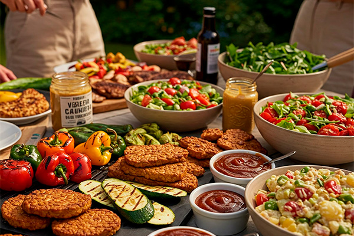

Churrasco Vegano: Uma Tendência Saborosa que Veio para Ficar
Publicado em 01 de Abril, 2025

Falar em churrasco e veganismo na mesma frase pode parecer contraditório para alguns, mas a realidade é que o **churrasco vegano** (ou churrasco à base de plantas) deixou de ser um nicho restrito para se tornar uma **tendência crescente e saborosa**. Seja por questões éticas, de saúde ou ambientais, ou simplesmente pela curiosidade de experimentar novos sabores, cada vez mais pessoas estão descobrindo o potencial da grelha para além da carne.
Longe de ser apenas "salada na brasa", o churrasco vegano moderno explora a versatilidade de legumes, cogumelos, frutas e proteínas vegetais, utilizando técnicas e temperos que garantem uma experiência rica em sabor, textura e aroma.
O Que Vai para a Grelha Vegana?
A variedade de opções é enorme e surpreendente:
- Legumes Clássicos: Milho na espiga, batata doce em rodelas, abobrinha, berinjela, pimentões coloridos, cebola (em pétalas ou inteira), aspargos. Marinados ou pincelados com azeite e ervas, ficam deliciosos.
- Cogumelos: Portobello grande (ótimo para hambúrgueres veganos), shiitake, shimeji (em pacotinhos de papel alumínio com shoyu e manteiga vegetal), eryngii (com textura firme, lembra carne).
- Proteínas Vegetais:
- **Tofu e Tempeh:** Firmes e extra-firmes, marinados previamente para absorver sabor, ficam ótimos grelhados em espetinhos ou fatias grossas.
- **Seitan:** Conhecido como "carne de glúten", tem textura fibrosa e absorve bem temperos. Pode ser grelhado em bifes ou espetos.
- **Hambúrgueres e Linguiças Veganas:** O mercado oferece opções industrializadas cada vez mais saborosas e com textura similar à carne, ou você pode fazer os seus em casa (com grão de bico, lentilha, feijão, etc.).
- Frutas: Abacaxi grelhado com canela, banana da terra, manga e pêssego ganham um sabor caramelizado incrível na brasa.
- Queijos Veganos:** Existem opções que derretem bem, ótimas para rechear legumes ou finalizar pratos.
- Pão de Alho Vegano:** Fácil de adaptar usando manteiga vegetal e maionese vegana na pasta.
Dicas para um Churrasco Vegano de Sucesso
- Marinadas são Essenciais:** Especialmente para tofu, tempeh e seitan, que são mais neutros. Use marinadas saborosas com base de shoyu, azeite, ervas, especiarias, sucos cítricos.
- Controle do Fogo:** Legumes e proteínas vegetais geralmente cozinham mais rápido que carnes densas. Use fogo médio e fique atento para não queimar. A técnica de zonas de calor (direto e indireto) também é útil aqui.
- Grelhas Limpas e Separadas (se possível):** Se estiver fazendo um churrasco misto, tente usar uma área separada da grelha ou até uma grelha menor sobre a principal para os itens veganos, evitando contaminação cruzada para quem é estritamente vegano. Limpe bem a grelha antes de começar.
- Capriche nos Molhos:** Molho barbecue vegano, chimichurri, pesto, molhos à base de castanhas ou tahine podem elevar o sabor dos grelhados.
- Não Tenha Medo de Temperar:** Use e abuse de ervas frescas, especiarias, alho, cebola, fumaça líquida (para dar um toque defumado).
- Paciência com Cogumelos:** Cogumelos como portobello liberam muita água. Grelhe-os sem pressa até dourarem e perderem o excesso de líquido para concentrar o sabor.
Inclusão e Novos Sabores
Oferecer opções veganas no churrasco não é apenas uma forma de incluir amigos e familiares que seguem essa dieta, mas também uma oportunidade para todos explorarem novos sabores e texturas. Um bom churrasco vegano pode surpreender até os carnívoros mais convictos!
A tendência mostra que a grelha é um espaço democrático, capaz de transformar ingredientes simples em pratos deliciosos, sejam eles de origem animal ou vegetal. Que tal experimentar na sua próxima reunião?
Curioso sobre Churrasco Vegano?
Receba receitas veganas para grelha, dicas de preparo e descubra um novo mundo de sabores. Inscreva-se!